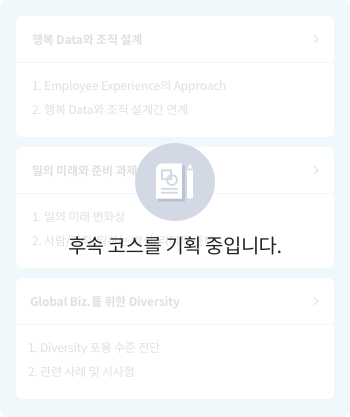

Management College
Deep Change를 위해 내가 하는 일은 어떻게 바뀌어야 할까요?
어떻게 성장할 수 있을까요?
어떻게 성장할 수 있을까요?
Management College는 Deep Change를 위한 Biz. 실행 역량 제고를 위해 6개 Function Group, 1개 Competency 영역의 직무 역량 학습을 제공합니다. Function Group별 지식/전문성 뿐 아니라 여러 Function간 결합을 통한 융합/통합 역량 확보도 계획하고 있습니다.
HR/조직 설계
-
HR Function에서는 (1) HR 실무에 기반한 기초 이해 및 방법론, Practice와
(2) 미래 기술 변화에 따른 HR Tech 관련 지식 등 HR 담당자들의 업무 실행력과 Insight 확대를 위한
체계적인 컨텐츠를 제공합니다. -
조직 설계 Function에서는 (1) 조직 설계의 핵심 개념/원칙들과 Practical 한 방법론을 익히고,
(2) Silo 해소/ 구성원 행복/ 신사업 추진 등 조직 설계상의 현실적 고민들을 해결할 수 있는 장을 제공합니다.
각 Badge와 코스를 클릭하면 해당 페이지로 이동합니다.

HR
조직 설계

방법론/
적용학습


개념 이해